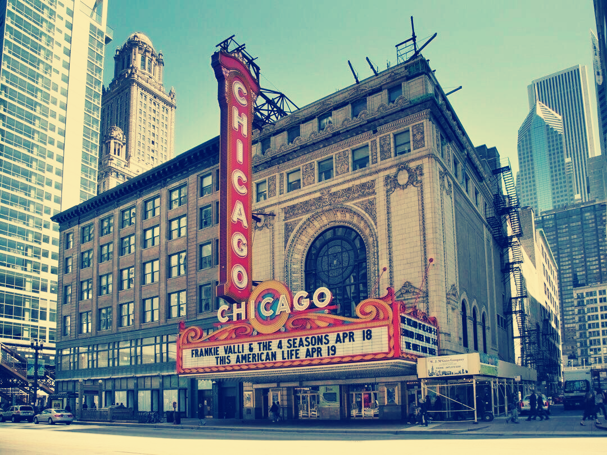

联合剧院关闭
风城陆标将消失
The Union Theatre—a Chicago landmark that opened in 1891—quietly closed its doors for the last time. Passersby hurried by, few realizing that this was its final day.
联合剧院——于1891年开放的芝加哥陆标——悄无声息地最后一次关上了它的大门。路过这里的人步履匆匆，很少有人意识到，这是它最后的一天。
Originating from the United Arts Hall, the United Theatre has hosted performances by many internationally renowned artists, such as Will Rogers, W.C. Fields, Jimmy Durante, and Harry Houdini. Over the past few decades, it has been a part of many Chicagoans' childhood memories and first dates.
源自联合技艺馆的联合剧院见证了很多国际著名艺人的演出，诸如 Will Rogers、W.C. Fields、Jimmy Durante 与 Harry Houdini 等国际著名艺人。过去的几十年间，它的舞台承载着魔术、滑稽戏和香槟摇滚，是许多芝加哥人童年记忆和第一次约会的一部分。
However, with the passage of time, the rise of large multiplex cinemas and changing audience tastes led to a sharp decline in theater attendance. In the 1990s, the theater attempted to introduce more modern entertainment programs, but these efforts yielded little success and further eroded its original reputation.
但随着时代的变迁，大型多厅电影院的兴起和观众口味的改变让剧院客流锐减。上世纪90年代，剧院尝试引入更现代化的娱乐节目，然而收效甚微，也削弱了它原有的声誉。
This year's unfortunate structural seismic damage inspection ultimately led to this decision. The theater's operators stated that, given the high maintenance costs and low usage frequency, they decided not to reopen the venue.
今年的令人遗憾一场结构性地震性损伤检查最终促成了这一决定。剧院运营方称，考虑到维护费用高昂与使用频率低下，决定不再重启营业。
"We tried to keep it," said Lisa Sutch, a front-of-house staff member who has worked at the theater for over two decades, "but in the end, it couldn't be saved."
"我们试着留下它，"剧院前台工作人员丽莎·苏切特说，她已在剧院工作了二十多年，"但终究是留不住了。"
The closure of the Union Theater is not merely a business decision but the end of an era. For countless Chicagoans, the Union Theater's golden age was a time of brilliance and glory. It will be deeply remembered and forever cherished.
对于许多居民来说，联合剧院的关闭不仅仅是一次商业决定，而是一段历史的终止。
城市文化委员会未就建筑的未来用途作出评论。目前尚不清楚这座维多利亚式剧院是否会保留原貌，或将拆除改建。
无论结局如何，不过万千芝加哥人来说，联合剧院的黄金时代是如此的光辉闪耀。他会被我们深深记住，永远怀念的。
